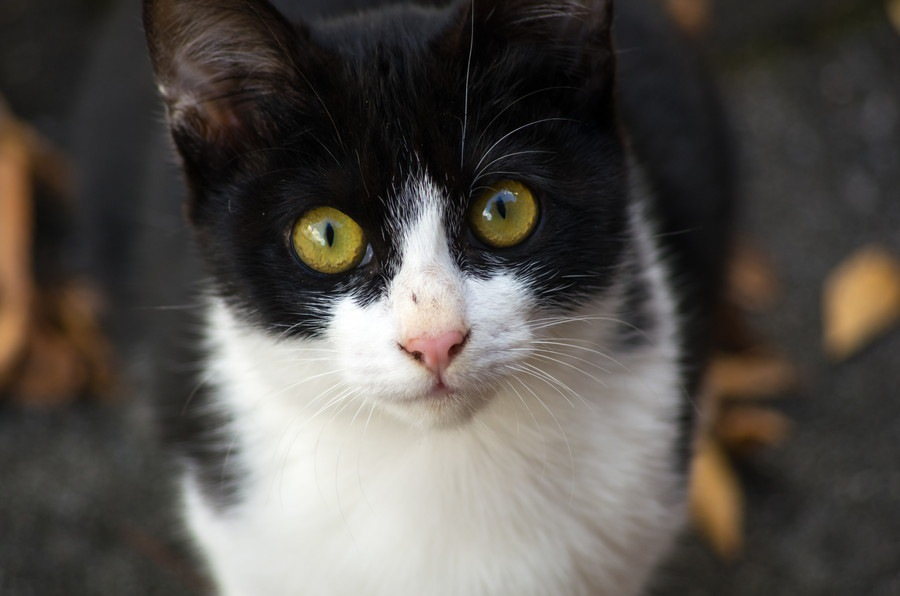
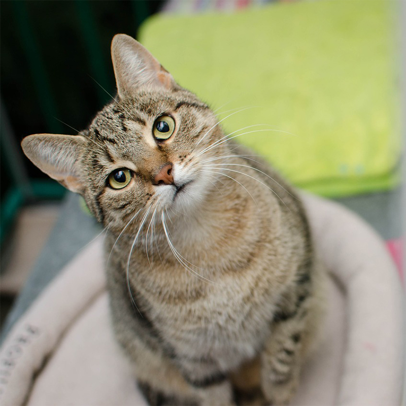
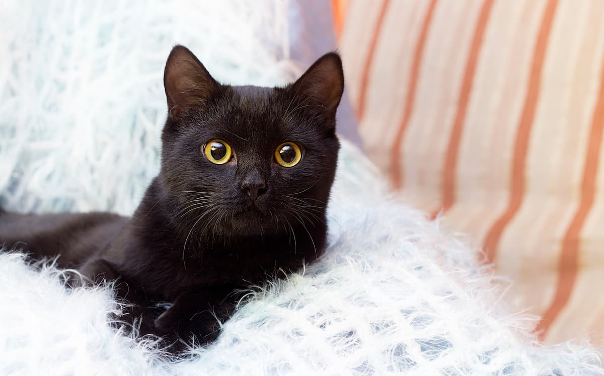
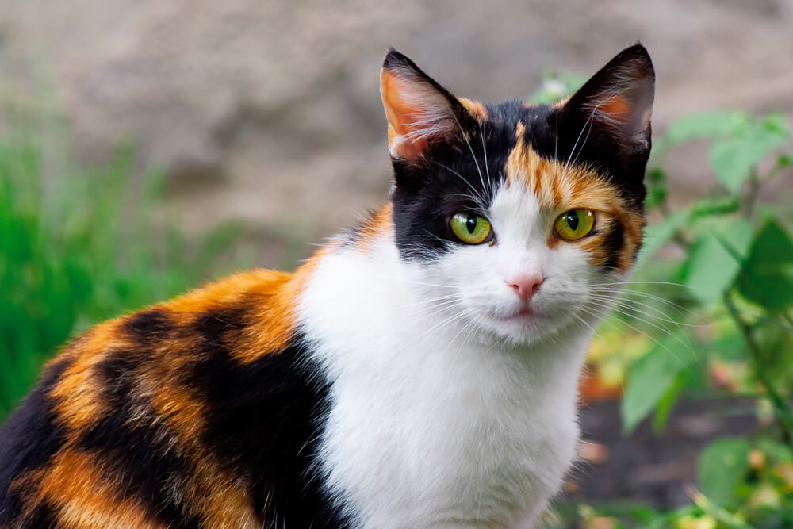
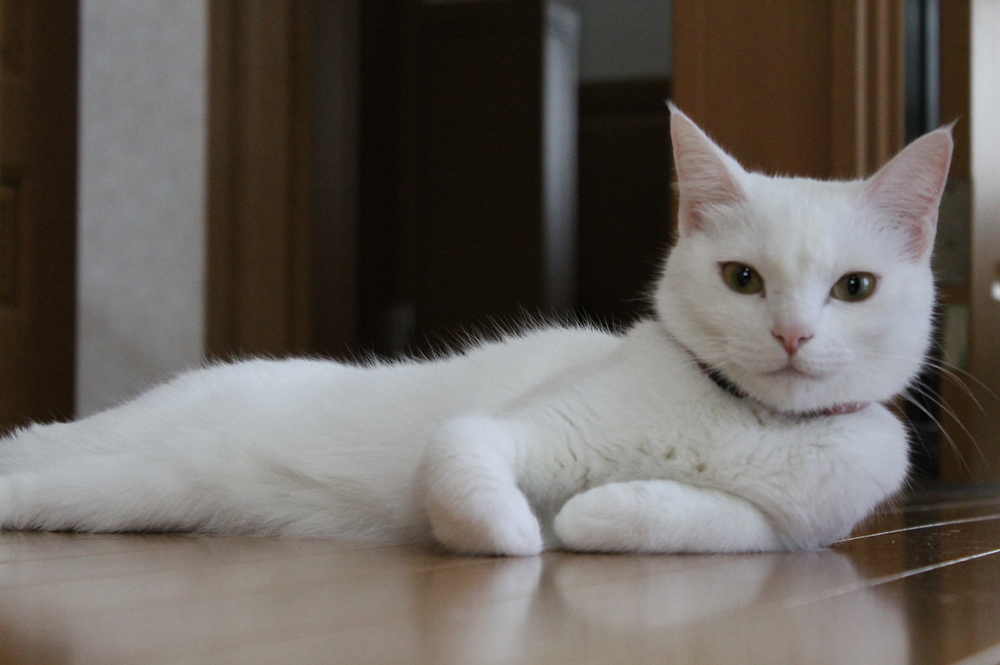
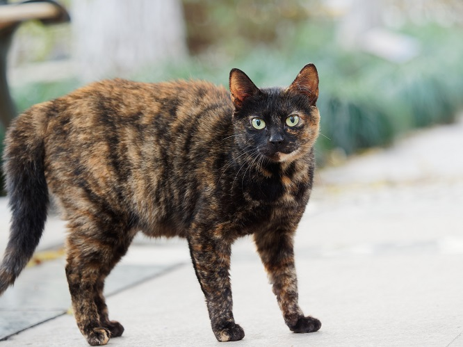

日本の猫の紹介
-

- ブチ猫(ブチネコ)
- 一般的にホワイトの毛とブラックの毛の二つの毛色を持つ猫
ブチ猫の性格は色の割合によって違いがあると言われている
-

- キジトラ
- キジトラはブラウンの地色にブラックの縞模様が入った猫
懐っこく甘えん坊で、日本猫の中でも特に好奇心が強いと言われている
-

- 黒猫(クロネコ)
- 毛色がブラックの単色の猫
性格は強もてな見た目と正反対の甘えん坊な性格をしている
-

- 三毛猫(ミケネコ)
- ブラック、レッド、ホワイトの三つの毛色を持つ猫
性格を一言で表すならお姫様気質、好き嫌いがはっきり分かれていてとてもマイペース
-

- 白猫(シロネコ)
- 毛色がホワイトの単色でほかの色が一切混じらない猫
白猫は賢くて利口な性格をしている
-

- サビ猫(サビネコ)
- ブラックとレッドの毛がモザイクのように入り混じった猫
性格も見た目を反映してか臆病で物静か